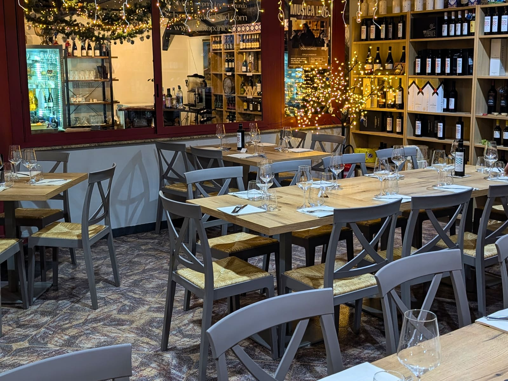

Far percepire online la qualità dell'esperienza reale, senza perdere calore o semplicità.
Ogni scelta doveva essere utile all'ospite e sostenibile per chi lavora nel locale.
Un'immagine coerente, capace di raccontare carattere e quotidianità.
Strumenti più chiari per prenotazioni, turni e proposta vini.
Meno passaggi intermedi, più contatto diretto con gli ospiti.
Colori, materiali e tono visivo per un locale contemporaneo, accogliente e concreto.
Informazioni, menu e prenotazione pensati per chi deve scegliere in pochi secondi.
Meno dipendenza dai portali, più dati e contatti che restano al ristorante.
Strumenti pensati per alleggerire i passaggi ripetitivi dello staff.
Contenuti ed SEO per intercettare chi cerca un locale come questo, non solo chi lo conosce già.
Una fotografia del prodotto: calda, immediata, senza artifici.
Homepage essenziale, percorsi chiari e pagine dedicate a menu, prenotazioni, storia e contatti.
Un linguaggio vicino a chi corre tra i tavoli: preciso, ospitale, mai costruito.
Per l'ospite significa trovare subito ciò che cerca. Per il team significa ricevere richieste più chiare e meno frammentate.
Una struttura uniforme per ospiti italiani e internazionali, con sezioni facili da scorrere e informazioni sempre aggiornabili.
Antipasti, pizze, cucina e bevande in un ordine che rende naturale la scelta.
Testo leggibile, contrasto curato, file facili da aprire anche al tavolo.
I piatti identitari hanno più spazio, più contesto, una presenza memorabile.
| Aspetto | Piattaforme come TheFork | Canale diretto |
|---|---|---|
| Rapporto con l'ospite | Mediato dal portale | Diretto, dati al locale |
| Costo per coperto | Commissione ricorrente | Più accessibile |
| Continuità | Dipende dalle regole del portale | Decide il ristorante |
Abbandonare del tutto piattaforme come TheFork e concentrare le prenotazioni su un canale proprietario collegato al sito, per raccogliere le richieste senza intermediari.
Ogni prenotazione che arriva dal canale del locale è una relazione che resta al locale, non al portale.
Sito, canale diretto e contenuti (pag. 07) lavorano insieme: nessun singolo intervento basta da solo.
Pagine veloci, titoli e descrizioni pensati per Google, dati strutturati e un sito costruito per essere letto bene sia da chi visita sia dai motori di ricerca.
Sul blog di AB Web Agency pubblichiamo guide pratiche per la ristorazione — dal sito che converte alla gestione delle prenotazioni — pensate per chi cerca risposte concrete, non solo per un ristorante alla volta.
Chi cerca "pizza napoletana a Torino" ha già deciso cosa vuole. È traffico che si somma a quello dei portali, non lo sostituisce.
Sito, contenuti, SEO locale e presenza social lavorano insieme: il progetto non isola il contributo di ciascuna leva.
Una guida digitale alla proposta vini: più chiara per il team, più pronta a sostenere suggerimenti coerenti al tavolo.
Turni e presenze leggibili in un unico spazio. Meno messaggi sparsi, più tempo dedicato alla sala.
Una selezione di articoli brandizzati per dare forma fisica al legame con il locale.
Un contenuto dedicato per raccontare il traguardo con volti, sala e memoria.
Un momento riconoscibile, non una promozione generica.
Gli ospiti entrano nel racconto e diventano parte della celebrazione.
Materiali e contenuti restano utili anche dopo l'evento.
Diretto, ospitale e concreto. Le parole raccontano il servizio senza trasformarlo in una posa.
Piatti, persone e spazi scelti per far riconoscere il locale, non per inseguire un'estetica anonima.
Un sistema coerente — sito, contenuti e canale diretto — permette al ristorante di mostrarsi per ciò che è davvero, ogni giorno.
Menu digitale in quattro lingue.
Sistema di prenotazione proprietario.
Strumenti per turni e proposta vini.
Questo caso studio non riporta percentuali di risultato.
La crescita è utile quando resta leggibile: per il cliente, per il team e per chi prende le decisioni nel locale.
Sito, menu, prenotazione diretta e asset di comunicazione.
SEO, contenuti e miglioramento dei percorsi di prenotazione.
Campagne mirate, ricorrenze e fidelizzazione degli ospiti.
Per questo ogni componente è pensato per essere aggiornato senza perdere coerenza o rallentare l'operatività.
Se vuoi capire come rendere più chiara la tua presenza digitale, più diretta la relazione con gli ospiti, più semplice la gestione quotidiana e più costante la tua visibilità online, parliamone.
ab.agenziaweb@gmail.com · abagenziaweb.it